Tugas: Time Series Forecasting (skforecast)#
Sumber: skforecast.org/0.15.1/user_guides/explainability.html#
1. Analisa Prediksi Tentang Apa?#
Tutorial ini melakukan prediksi permintaan listrik harian (Electricity Demand) di negara bagian Victoria, Australia.
Target (output): Total konsumsi listrik per hari dalam satuan MW (Megawatt)
Periode data: 2012–2014, frekuensi setengah-jam yang diagregasi menjadi harian
Tujuan utama: Bukan hanya meramalkan nilai, tetapi menjelaskan mengapa model membuat prediksi tersebut (explainability) menggunakan beberapa metode analisis
# |
Metode |
Scope |
|---|---|---|
1 |
Feature Importance (LightGBM) |
Global |
2 |
Permutation Importance |
Global |
3 |
Partial Dependence Plot (PDP) |
Global |
4 |
SHAP Summary Plot |
Global |
5 |
SHAP Dependence Plot |
Global |
6 |
SHAP Force / Waterfall Plot |
Lokal (per prediksi) |
Install & Import Library#
!pip install skforecast lightgbm shap -q
import warnings
warnings.filterwarnings('ignore')
import pandas as pd
import matplotlib.pyplot as plt
import shap
from sklearn.inspection import permutation_importance
from sklearn.inspection import PartialDependenceDisplay
from lightgbm import LGBMRegressor
from skforecast.datasets import fetch_dataset
from skforecast.recursive import ForecasterRecursive
import logging
logging.getLogger('lightgbm').setLevel(logging.ERROR)
import skforecast, lightgbm
print(f"skforecast : {skforecast.__version__}")
print(f"lightgbm : {lightgbm.__version__}")
print(f"shap : {shap.__version__}")
print("✅ Semua library berhasil diimport!")
Penjelasan:
skforecast: Framework untuk time series forecasting dengan machine learninglightgbm: Model gradient boosting yang akan kita gunakanshap: Library untuk explainability (menjelaskan prediksi model)Library lainnya untuk data manipulation, visualization, dan feature importance
2. Bentuk Data Training#
Sumber Data#
Dataset vic_electricity dari paket R tsibbledata, berisi konsumsi listrik Victoria, Australia dengan frekuensi setengah-jam (52.608 baris).
Kolom yang tersedia:
Time— tanggal dan waktu pencatatan (index)Demand— permintaan listrik dalam MWTemperature— suhu di Melbourne, ibu kota VictoriaHoliday— indikator hari libur
Download & Agregasi Data#
# Download dataset
data = fetch_dataset(name="vic_electricity")
print(f"Shape data asli : {data.shape}")
print("\n3 baris pertama:")
print(data.head(3).to_string())
Output yang diharapkan:
Shape data asli : (52608, 4)
3 baris pertama:
Demand Temperature Holiday
Time
2011-12-31 13:00:00 4382.825174 21.40 True
2011-12-31 13:30:00 4263.365526 21.05 True
2011-12-31 14:00:00 4048.966046 20.70 True
Agregasi dari setengah-jam menjadi frekuensi harian:
# Agregasi dari setengah-jam menjadi harian
data = data.resample('D').agg({'Demand': 'sum', 'Temperature': 'mean'})
print(f"Shape setelah agregasi : {data.shape}")
print(f"Periode : {data.index.min().date()} s.d. {data.index.max().date()}")
print("\n3 baris pertama:")
print(data.head(3).to_string())
Output yang diharapkan:
Shape setelah agregasi : (1097, 2)
Periode : 2011-12-31 s.d. 2014-12-31
3 baris pertama:
Demand Temperature
Time
2011-12-31 82531.745918 21.047727
2012-01-01 227778.257304 26.578125
2012-01-02 275490.988882 31.751042
Penjelasan: Data asli dengan frekuensi setengah-jam (52.608 baris) diagregasi menjadi harian (1.097 baris). Kolom Demand dijumlahkan (sum) dan Temperature dirata-ratakan (mean).
Visualisasi Data#
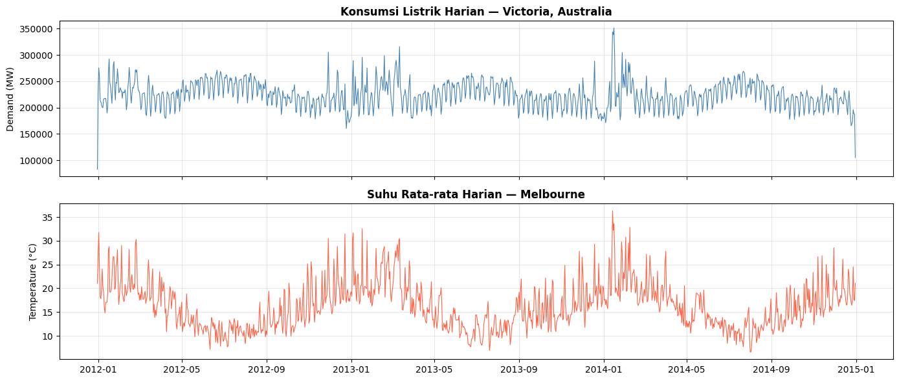
fig, axes = plt.subplots(2, 1, figsize=(14, 6), sharex=True)
axes[0].plot(data.index, data['Demand'], color='steelblue', linewidth=0.8)
axes[0].set_title('Konsumsi Listrik Harian — Victoria, Australia', fontsize=12, fontweight='bold')
axes[0].set_ylabel('Demand (MW)')
axes[0].grid(True, alpha=0.3)
axes[1].plot(data.index, data['Temperature'], color='tomato', linewidth=0.8)
axes[1].set_title('Suhu Rata-rata Harian — Melbourne', fontsize=12, fontweight='bold')
axes[1].set_ylabel('Temperature (°C)')
axes[1].grid(True, alpha=0.3)
plt.tight_layout()
plt.show()
Penjelasan: Grafik menunjukkan bahwa demand listrik berfluktuasi sepanjang tahun, dengan pola yang tampak berkaitan dengan suhu (naik saat musim panas dan dingin, rendah di musim peralihan).
Train-Test Split#
# Split train - test
data_train = data.loc[: '2014-12-21']
data_test = data.loc['2014-12-22':]
print(f"Tanggal train : {data_train.index.min().date()} — {data_train.index.max().date()}")
print(f"Tanggal test : {data_test.index.min().date()} — {data_test.index.max().date()}")
print(f"Shape train : {data_train.shape}")
print(f"Shape test : {data_test.shape}")
Output yang diharapkan:
Tanggal train : 2011-12-31 — 2014-12-21
Tanggal test : 2014-12-22 — 2014-12-31
Shape train : (1087, 2)
Shape test : (10, 2)
Penjelasan: Data dibagi menjadi training (1.087 hari) dan testing (10 hari). Data training digunakan untuk melatih model, data testing untuk evaluasi.
3. Apa Itu Lag?#
Lag adalah nilai dari waktu sebelumnya yang dijadikan fitur input untuk memprediksi nilai saat ini.
Model ML seperti LightGBM tidak mengerti urutan waktu secara otomatis. Dengan lag, time series diubah menjadi tabel regresi biasa yang bisa diproses model.
Ilustrasi lags = 7:
Hari ini (target) ← diprediksi dari:
lag_1 = demand kemarin (t-1)
lag_2 = demand 2 hari lalu (t-2)
lag_3 = demand 3 hari lalu (t-3)
...
lag_7 = demand 7 hari lalu (t-7)
+ Temperature hari ini (eksogen)
Bentuk matriks training setelah dibuat lag:
lag_1 |
lag_2 |
… |
lag_7 |
Temperature |
y (target) |
|---|---|---|---|---|---|
205338 |
211066 |
… |
82531 |
24.09 |
200693 |
200693 |
205338 |
… |
227778 |
20.22 |
200061 |
Penjelasan: Model belajar: “Jika demand 7 hari terakhir adalah [205338, 211066, …, 82531] dan suhu hari ini 24.09°C, maka demand hari ini kemungkinan 200693 MW”.
Membuat & Melatih Forecaster#
# Buat dan latih forecaster
forecaster = ForecasterRecursive(
estimator = LGBMRegressor(random_state=123, verbose=-1),
lags = 7
)
forecaster.fit(
y = data_train['Demand'],
exog = data_train['Temperature']
)
print("✅ Forecaster berhasil dilatih!")
print(forecaster)
Penjelasan:
ForecasterRecursive: Tipe forecaster yang membuat prediksi bertahap (hari 1, kemudian hari 2 berdasarkan prediksi hari 1, dll)lags=7: Menggunakan 7 nilai historis sebagai fiturexog=Temperature: Variabel eksogen (informasi tambahan dari luar time series target)LGBMRegressor: Model internal yang dipelajari
Matriks Training (X_train, y_train)#
# Tampilkan matriks training
X_train, y_train = forecaster.create_train_X_y(
y = data_train['Demand'],
exog = data_train['Temperature']
)
print("=" * 60)
print("MATRIKS X_train (INPUT FITUR):")
print("=" * 60)
print(f"Shape : {X_train.shape} ({X_train.shape[0]} baris x {X_train.shape[1]} kolom)")
print(f"Kolom : {X_train.columns.tolist()}")
print("\n3 baris pertama:")
print(X_train.head(3).to_string())
print("\n" + "=" * 60)
print("y_train (TARGET OUTPUT):")
print("=" * 60)
print(y_train.head(3).to_string())
Output yang diharapkan:
============================================================
MATRIKS X_train (INPUT FITUR):
============================================================
Shape : (1080, 8) (1080 baris x 8 kolom)
Kolom : ['lag_1', 'lag_2', 'lag_3', 'lag_4', 'lag_5', 'lag_6', 'lag_7', 'Temperature']
3 baris pertama:
lag_1 lag_2 lag_3 lag_4 lag_5 lag_6 lag_7 Temperature
Time
2012-01-07 205338.714620 211066.426550 213792.376946 258955.329422 275490.988882 227778.257304 82531.745918 24.098958
2012-01-08 200693.270298 205338.714620 211066.426550 213792.376946 258955.329422 275490.988882 227778.257304 20.223958
2012-01-09 200061.614738 200693.270298 205338.714620 211066.426550 213792.376946 258955.329422 275490.988882 19.161458
============================================================
y_train (TARGET OUTPUT):
============================================================
Time
2012-01-07 200693.270298
2012-01-08 200061.614738
2012-01-09 216201.836844
Freq: D, Name: Demand, dtype: float64
Penjelasan:
X_train (1080 × 8): Input fitur — lag_1 sampai lag_7 (7 nilai historis) + Temperature (1 variabel eksogen) = 8 fitur
y_train: Target output — demand yang ingin diprediksi
Setiap baris adalah 1 sample training (1 hari)
4. Proses Analisis Explainability#
a. Feature Importance (Model-Specific)#
LightGBM menghitung pentingnya fitur berdasarkan berapa kali fitur digunakan untuk melakukan split di semua decision tree. Semakin sering dipakai = semakin penting.
# Feature importances
feature_importances = forecaster.get_feature_importances()
print("Feature Importance dari LightGBM:")
print(feature_importances.to_string())
Output yang diharapkan:
Feature Importance dari LightGBM:
feature importance
7 Temperature 570
0 lag_1 470
2 lag_3 387
1 lag_2 362
6 lag_7 325
5 lag_6 313
4 lag_5 298
3 lag_4 275
Visualisasi:
# Plot feature importances
fig, ax = plt.subplots(figsize=(5, 4))
feature_importances.sort_values('importance', ascending=True).plot(
x = 'feature',
y = 'importance',
kind = 'barh',
ax = ax,
legend = False
)
ax.set_title('Feature Importance (LightGBM — mean decrease impurity)')
ax.set_xlabel('Importance')
ax.set_ylabel('Feature')
plt.tight_layout()
plt.show()
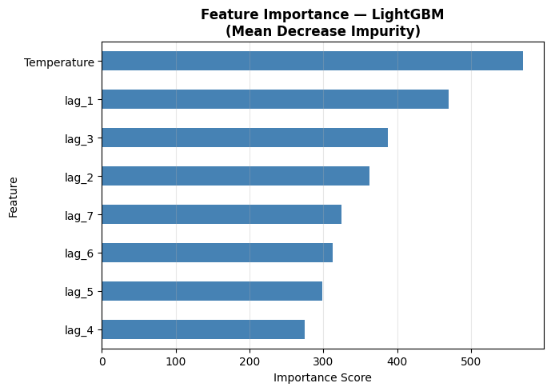
Penjelasan: Grafik menunjukkan bahwa Temperature dan lag_1 (demand kemarin) adalah fitur paling penting. Temperature penting karena permintaan listrik sangat tergantung cuaca (AC/pemanas), dan lag_1 penting karena demand hari ini sangat mirip dengan kemarin (persistence).
b. Permutation Importance#
Permutation importance mengukur kontribusi setiap fitur dengan cara mengacak nilainya dan melihat seberapa menurunnya performa model.
# Permutation importance
result = permutation_importance(
estimator = forecaster.estimator,
X = X_train,
y = y_train,
n_repeats = 10,
random_state = 123,
n_jobs = -1
)
permutation_imp_df = pd.DataFrame({
'feature' : X_train.columns,
'importance_mean' : result.importances_mean,
'importance_std' : result.importances_std
}).sort_values('importance_mean', ascending=False)
print("Permutation Importance (10 pengulangan):")
print(permutation_imp_df.to_string(index=False))
Output yang diharapkan:
Permutation Importance (10 pengulangan):
feature importance_mean importance_std
lag_1 0.627840 0.026905
Temperature 0.411182 0.016031
lag_7 0.189094 0.006811
lag_2 0.109668 0.004352
lag_6 0.077652 0.002949
lag_3 0.039407 0.001626
lag_5 0.030589 0.001519
lag_4 0.024034 0.001446
Visualisasi:
# Plot permutation importance
sorted_idx = result.importances_mean.argsort()
fig, ax = plt.subplots(figsize=(6, 5))
ax.boxplot(
result.importances[sorted_idx].T,
vert = False,
tick_labels = X_train.columns[sorted_idx]
)
ax.set_title('Permutation Feature Importance\n(10 pengulangan)')
ax.set_xlabel('Penurunan performa saat fitur diacak')
ax.axvline(x=0, color='grey', linestyle='--')
ax.grid(True, axis='x', alpha=0.3)
plt.tight_layout()
plt.show()
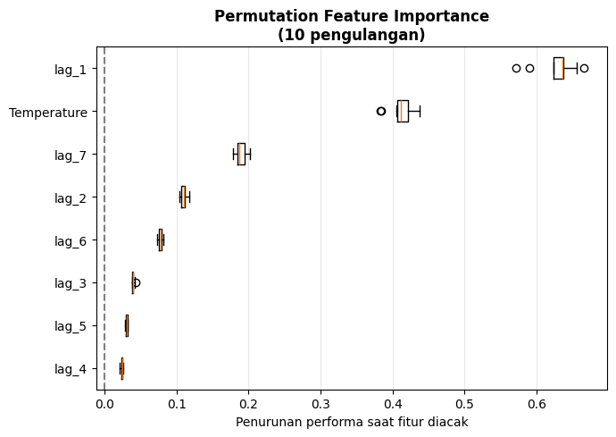
Penjelasan:
lag_1 adalah fitur paling krusial — jika diacak, error model naik paling tinggi (0.628)
Temperature juga sangat penting (0.411)
Lag-lag yang lebih jauh (lag_4 s.d. lag_7) kurang penting
Perbedaan dengan Feature Importance: Feature Importance hanya menghitung penggunaan split, Permutation Importance langsung mengukur dampak terhadap performa
c. Partial Dependence Plot (PDP)#
PDP menampilkan rata-rata respons model saat nilai satu fitur divariasikan di seluruh rentangnya, sementara fitur lain dipertahankan tetap.
# Partial Dependence Plots
features_to_plot = ['lag_1', 'lag_2', 'lag_3', 'lag_4',
'lag_5', 'lag_6', 'lag_7', 'Temperature']
fig, axes = plt.subplots(nrows=2, ncols=4, figsize=(14, 7), sharey=False)
axes = axes.flatten()
for i, feature in enumerate(features_to_plot):
PartialDependenceDisplay.from_estimator(
estimator = forecaster.estimator,
X = X_train,
features = [feature],
kind = 'average',
ax = axes[i]
)
axes[i].set_title(f'PDP — {feature}')
axes[i].grid(True, alpha=0.3)
plt.suptitle('Partial Dependence Plots — Semua Fitur', fontsize=13, fontweight='bold', y=1.02)
plt.tight_layout()
plt.show()
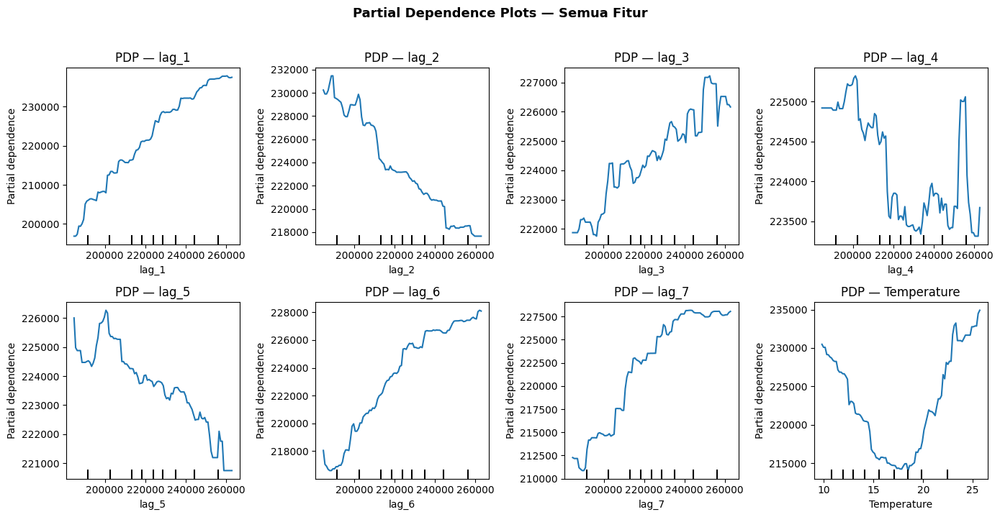
Penjelasan:
lag_1 s.d. lag_7: Kurva naik linear — semakin tinggi demand hari-hari sebelumnya, semakin tinggi prediksi hari ini (logis!)
Temperature: Kurva berbentuk U — demand tinggi saat sangat dingin (pemanas) dan sangat panas (AC), rendah di suhu menengah (spring/fall)
d. SHAP Values#
SHAP (SHapley Additive exPlanations) menghitung kontribusi marginal setiap fitur terhadap prediksi dengan prinsip teori permainan.
d.1 SHAP pada Data Training#
# Create SHAP explainer menggunakan estimator internal forecaster
explainer = shap.TreeExplainer(forecaster.estimator)
shap_values = explainer.shap_values(X_train)
print(f"Shape SHAP values : {shap_values.shape}")
print(f"Expected value : {explainer.expected_value:.2f} MW")
print(f"Shape X_train : {X_train.shape}")
print("Setiap baris = satu observasi, setiap kolom = nilai SHAP untuk satu fitur")
Output yang diharapkan:
Shape SHAP values : (1080, 8)
Expected value : 224215.91 MW
Shape X_train : (1080, 8)
Penjelasan:
SHAP values memiliki shape yang sama dengan X_train (1080 × 8)
Setiap nilai SHAP menunjukkan seberapa besar kontribusi fitur tersebut ke arah positif atau negatif
expected_valueadalah rata-rata prediksi model di seluruh training data
SHAP Summary Plot (Bar) — Global Feature Importance:
# SHAP summary plot — bar (global importance)
shap.summary_plot(
shap_values,
X_train,
plot_type = 'bar',
show = True
)
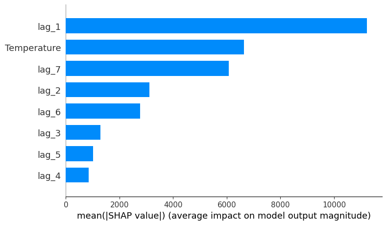
Penjelasan: Bar chart menunjukkan rata-rata absolut SHAP values untuk setiap fitur. Temperature dan lag_1 mendominasi, sesuai dengan hasil feature importance sebelumnya.
SHAP Summary Plot (Beeswarm) — Distribusi & Arah Pengaruh:
# SHAP summary plot — beeswarm (distribusi kontribusi per observasi)
shap.summary_plot(
shap_values,
X_train,
show = True
)
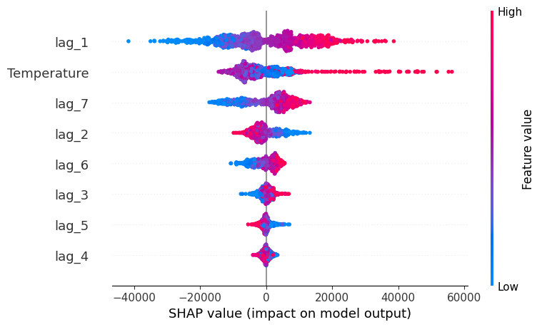
Penjelasan:
Sumbu Y: Fitur (diurutkan dari paling penting)
Sumbu X: Nilai SHAP (positif = dorong prediksi naik, negatif = dorong turun)
Warna titik: Merah = nilai fitur tinggi, Biru = nilai fitur rendah
Contoh Temperature: Titik merah banyak di sisi kanan (SHAP positif) — suhu tinggi mendorong demand naik; titik biru di sisi kanan juga — suhu rendah juga mendorong demand naik (U-shape)
SHAP Dependence Plot — lag_1:
# SHAP dependence plot untuk lag_1
fig, ax = plt.subplots(figsize=(7, 4))
shap.dependence_plot(
"lag_1",
shap_values,
X_train,
ax = ax,
show = False
)
ax.set_title('SHAP Dependence Plot — lag_1 (Demand kemarin)', fontweight='bold')
plt.tight_layout()
plt.show()
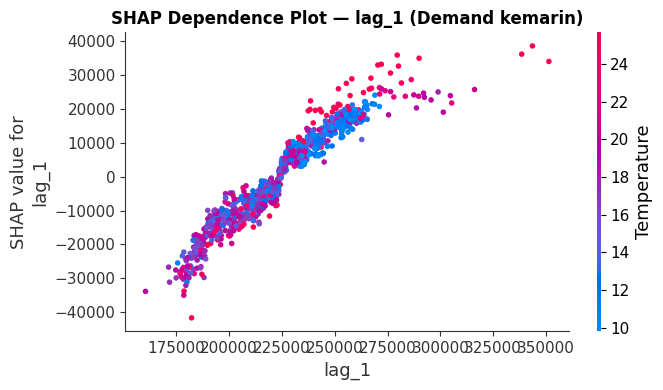
Penjelasan: Scatter plot menunjukkan hubungan: semakin tinggi lag_1 (demand kemarin), semakin tinggi SHAP value (dorong prediksi naik). Hubungan hampir linear dan positif sempurna.
SHAP Dependence Plot — Temperature:
# SHAP dependence plot untuk Temperature
fig, ax = plt.subplots(figsize=(7, 4))
shap.dependence_plot(
"Temperature",
shap_values,
X_train,
ax = ax,
show = False
)
ax.set_title('SHAP Dependence Plot — Temperature', fontweight='bold')
plt.tight_layout()
plt.show()
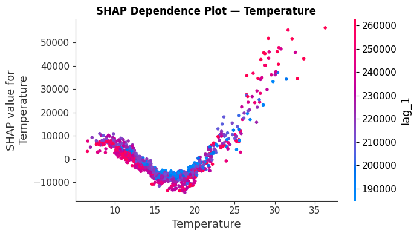
Penjelasan: Scatter plot menunjukkan hubungan non-linear U-shape: SHAP value negatif di suhu menengah (20-25°C), SHAP value positif di suhu ekstrem (dingin < 10°C atau panas > 30°C). Ini sesuai dengan PDP yang menunjukkan demand tinggi saat musim panas/dingin.
SHAP Waterfall Plot — Local Explanation untuk Observasi Pertama:
# SHAP waterfall plot untuk observasi pertama
idx = 0
print(f"Tanggal : {X_train.index[idx].date()}")
print(f"Base val : {explainer.expected_value:.0f} MW")
print(f"Prediksi : {explainer.expected_value + shap_values[idx, :].sum():.0f} MW")
shap_exp = shap.Explanation(
values = shap_values[idx, :],
base_values = float(explainer.expected_value),
data = X_train.iloc[idx, :].values,
feature_names = X_train.columns.tolist()
)
shap.waterfall_plot(shap_exp, show=True)
Output yang diharapkan:
Tanggal : 2012-01-07
Base val : 224215 MW
Prediksi : 200693 MW
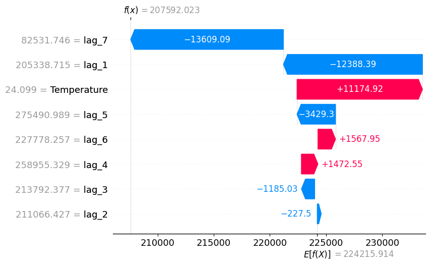
Penjelasan: Waterfall plot menunjukkan:
Base value (224.215 MW): Rata-rata prediksi model
Setiap fitur: Kontribusinya ke arah naik (merah) atau turun (biru)
Output akhir (200.693 MW): Base value + sum semua kontribusi
Contoh: lag_1 = 205.338 MW → kontribusi NEGATIF (turunkan prediksi dari baseline), Temperature = 24.1°C → kontribusi NEGATIF (suhu moderate, bukan ekstrem)
d.2 SHAP pada Data Prediksi#
Selain menjelaskan model saat training, SHAP juga dapat menjelaskan prediksi future values.
# Prediksi 10 hari ke depan
predictions = forecaster.predict(
steps = 10,
exog = data_test['Temperature']
)
print("Hasil prediksi 10 hari:")
print(predictions.to_string())
Output yang diharapkan:
2014-12-22 241514.532543
2014-12-23 226165.936559
2014-12-24 220506.468700
...
2014-12-31 217948.965404
Matriks input yang digunakan untuk prediksi:
# Matriks input prediksi
X_predict = forecaster.create_predict_X(
steps = 10,
exog = data_test['Temperature']
)
print(f"Shape X_predict : {X_predict.shape}")
print("\nMatriks input prediksi:")
print(X_predict.to_string())
Penjelasan: create_predict_X() mengembalikan matriks fitur (lag values + exog) yang digunakan secara internal oleh predict() untuk menghasilkan 10 prediksi.
SHAP values untuk data prediksi:
# SHAP values untuk data prediksi
shap_values_pred = explainer.shap_values(X_predict)
print(f"Shape SHAP values prediksi : {shap_values_pred.shape}")
# Summary plot untuk data prediksi
shap.summary_plot(
shap_values_pred,
X_predict,
show = True
)
Output yang diharapkan:
Shape SHAP values prediksi : (10, 8)
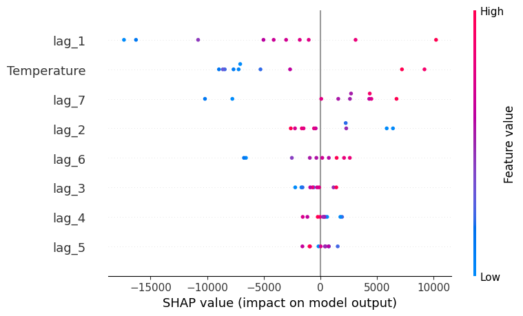
Penjelasan: Dari 10 prediksi yang dibuat, kita bisa menjelaskan kontribusi setiap fitur untuk masing-masing prediksi.
SHAP Waterfall Plot — Prediksi Pertama (22 Desember 2014):
# Waterfall plot untuk langkah prediksi pertama (2014-12-22)
idx_pred = 0
print(f"Tanggal prediksi : {X_predict.index[idx_pred].date()}")
print(f"Nilai prediksi : {predictions.iloc[idx_pred]:.0f} MW")
shap_exp_pred = shap.Explanation(
values = shap_values_pred[idx_pred, :],
base_values = float(explainer.expected_value),
data = X_predict.iloc[idx_pred, :].values,
feature_names = X_predict.columns.tolist()
)
shap.waterfall_plot(shap_exp_pred, show=True)
Output yang diharapkan:
Tanggal prediksi : 2014-12-22
Nilai prediksi : 241515 MW
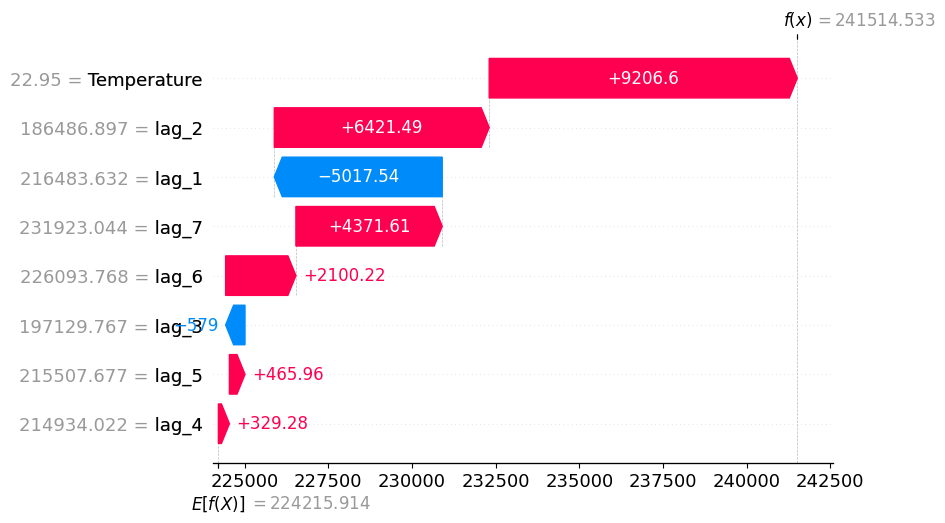
Penjelasan: Waterfall plot untuk prediksi menunjukkan:
Mengapa model memprediksi 241.515 MW untuk 22 Desember 2014?
Lag values (demand hari-hari sebelumnya) dan temperature hari itu berkontribusi apa?
Contoh: Jika lag_1 tinggi (demand kemarin tinggi) → kontribusi positif naik; Jika temperature moderate (20-25°C) → kontribusi negatif
Kesimpulan#
1. Analisa Prediksi Tentang Apa?#
Model memprediksi total permintaan listrik harian (Demand) di Victoria, Australia dalam satuan MW untuk 10 hari ke depan (22–31 Desember 2014) menggunakan ForecasterRecursive berbasis LightGBM.
2. Bentuk Data Training#
Setelah resample('D') dan create_train_X_y(), setiap baris data training berbentuk:
lag_1 |
lag_2 |
… |
lag_7 |
Temperature |
y (Demand) |
|---|---|---|---|---|---|
205338 |
211066 |
… |
82531 |
24.09 |
200693 |
Input (X):
lag_1s.d.lag_7(demand 7 hari sebelumnya) +Temperature(suhu hari ini)Output (y):
Demand— total konsumsi listrik yang ingin diprediksi
3. Apa Itu Lag?#
Lag adalah nilai historis dari target variable yang dijadikan fitur input. Dengan lags=7, model menggunakan demand dari t-1 hingga t-7 sebagai prediktor untuk nilai t (hari ini). Lag mengubah data time series menjadi format tabel regresi yang bisa diproses model ML.
4. Proses Analisis Explainability#
Metode |
Temuan Utama |
|---|---|
Feature Importance |
Temperature (570) dan lag_1 (470) paling sering dipakai untuk split di tree |
Permutation Importance |
lag_1 paling krusial — jika diacak, error naik 0.627 |
PDP |
Lag: hubungan linear positif. Temperature: hubungan U (demand tinggi saat suhu ekstrem) |
SHAP |
lag_1 tinggi → SHAP positif besar. Temperature menunjukkan pola non-linear yang konsisten dengan PDP |
Insight utama: Permintaan listrik Victoria sangat dipengaruhi dua faktor — pola historis demand (terutama hari sebelumnya) dan suhu ekstrem (musim panas butuh AC, musim dingin butuh pemanas). Model berhasil menangkap kedua pola ini secara bersamaan.